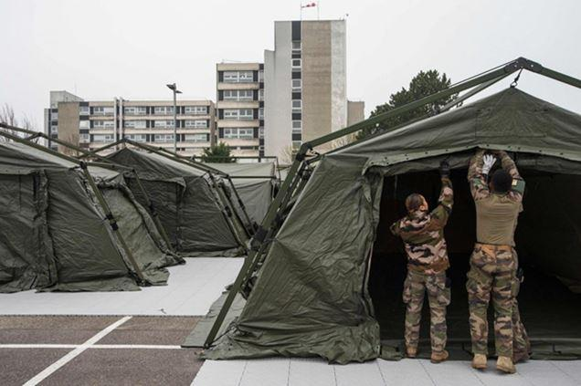

Depuis le 17 mars 2020, il est obligatoire de justifier de chacune de ses sorties et d'avoir un motif pour sortir de chez soi. Malheureusement, de nombreuses personnes ne prennent pas ces mesures au sérieux, ce qui pourrait avoir des conséquences dramatiques tant en termes de santé que d'économie pour la France.
Par ailleurs, depuis le 24 mars 2020, en raison de l'indiscipline de nombreuses personnes, le gouvernement commence à resserrer le confinement, il se durcit davantage sans être encore à un stade dit « total ».
Ces mesures ont des conséquences sur le plan sanitaire, économique, social et politique.
Sur le plan social
On peut effectivement tourner comme on veut, dans tous les sens, il n'en demeure pas moins que le confinement est inégalitaire.
En effet, il y a ceux qui ont un logement pour se confiner et les autres qui n'en ont pas, ceux qui ont un logement décent et les autres qui ont un logement insalubre, ceux qui ont une maison avec un jardin et ceux qui doivent se pencher à la fenêtre pour respirer de l'air frais.
En dépit de l'interdiction de se rendre à sa guise sur un lieu ou un autre, il a été mis en place le télétravail et le confinement produit alors des rapports au travail différents. À ce titre, on observe que le rapport social se creuse : d'une part, il y a ceux qui télé-travaillent et ceux qui continuent de travailler et de s'exposer au risque.
Le télétravail n'est pas le même pour tout le monde que l'on soit cadre ou que l'on fasse un travail administratif surtout quand l'on se retrouve face à un travail qui s'accompagne de plus en plus d'une perte de repères, de références humaines d'autant plus qu'il envahit la sphère privée et que les loisirs sont considérablement réduits.
Les conséquences directes de cette situation peuvent être l'aggravation de détresse psychologique : dépression, suicide ou tentatives de suicides. Cela va naturellement accentuer la perte de lien social et augmenter la vie tournée vers le travail pour celles et ceux qui en ont un.
La question qu'il faut se poser est :
Comment organiser un durcissement du confinement tout en prenant en compte la charge associative, le service public, la prise en charge de la pauvreté, de l'isolement des plus démunis et la perte d'activités pour celles et ceux pour qui elles étaient émancipatrices ?
L'autre crainte sociale, qui plus est d'actualité récente, est le risque de violences intrafamiliales. Il est révélé que le confinement va rapprocher les situations difficiles de couples ou familles qui étaient déjà dans une situation compliquée. Il peut y avoir une augmentation de violences conjugales, qui seront difficilement prises en charge compte tenu de la charge importante des cliniques et hôpitaux.
On peut penser, et l'expérience de la Chine l'atteste, que le confinement produit un rapport de force dégradé.
On a également observé que le confinement créé le stress et génère des besoins non naturels, tels que le fait de se ruer dans les magasins d'alimentation pour acheter des produits de première nécessité mais pas que !
La peur de manquer issue d'un comportement social historique d'après guerre provoque des besoins autres et augmentent le volume des caddies et fait quadrupler les mêmes besoins. On achète plus au cas où !
Les personnes ont du mal à s'organiser, à relativiser face à un tel évènement, et individuellement ils ne peuvent pas se protéger et pour une certaine majorité restent chez eux et par voie de conséquence achètent à outrance.
A cela se confond la peur de devenir malade et d'en mourir. Mais que faire sans dépistage ?
La seconde question est de savoir s'il faut en cas de confinement total, dépister tout le monde ?
Car il faut endiguer la pression sociale « restez chez vous » est important et cela repose uniquement sur le consentement d'une population à l'accepter ! or les français sont issus historiquement du peuple romain, donc méditerranéens, donc rebelles !
Dans ce cadre, il faudrait alors s'attendre, dans le cas d'un confinement qui se durcirait et durerait, à un soulèvement général de la population, en tous cas, de la part de celles et ceux pour qui ce n'est absolument pas un confort de logement ni de télétravail que de le vivre.
Un soulèvement qui peut se matérialiser par des actes d'incivilités, de vols, et escroqueries à l'encontre de personnes très vulnérables et prêtes à tout pour se sentir protéger.
Sur le plan économique
Les mesures prises à l'étranger et en France pour combattre l'épidémie de Covid 19 provoquent des conséquences économiques. Les Bourses mondiales ont brusquement chuté, le cours du pétrole s'est effondré.
Mais on observe surtout des carences et des difficultés d'approvisionnement de matières premières car elles proviennent de Chine. Ce constat conforte l'idée de la nécessité d'une indépendance énergétique, industrielle et logistique.
Il faut tenir compte des délais d'acheminement de la matière première ou des produits fabriqués bien loin de l'hexagone. Aussi il faut se poser la question d'un retour de zone de production en Europe et notamment pour tous les produits dit « vitaux ».
Sur le plan national, le confinement génère un arrêt brutal des petites entreprises, artisans ou commerçants qui vivent habituellement aux contacts des usagers. Cette situation créé à terme des pertes, creuse la trésorerie quand il y en a une mais surtout va générer un endettement majeur des entreprises qui n'avait pas de trésorerie.
Mêmes si certaines solutions proposées sont de l'ordre d'un décalage du paiement de cotisations sociales, patronales, factures, impôts...Il faudra tout de même s'en acquitter à un moment ou un autre, le prêt ne signifiant pas exonération.
Il faut donc également se poser la question sur l'annulation purement et simplement de ces dettes sociales et fiscales.
Le but d'un chef d'entreprise est de protéger l'outil de production et de veiller à sauvegarder l'emploi.
Demain l'enjeu sera le plein emploi des salariés et par voie de conséquences, outre une crise économique, il y aura un taux de chômage très élevé.
L'État joue un rôle du prêteur en dernier ressort mais cela très difficilement supportable par les finances publiques. L'argent ne tombe pas de nulle part. La France peut continuer à s'endetter à bas coût mais la capacité des marchés financiers est moindre et la Banque Centrale Européenne ne pourra pas suivre tous les pays.
La consommation des ménages sera en baisse car peu se risqueront à sortir, à investir ou encore à voyager puisque tout cela sera impossible, seuls les ressources de première nécessité seront accessibles.
Des secteurs plus que d'autres seront impactés comme le tourisme, l'immobilier, l'automobile, l'aérien et d'autres seront dans des difficultés importantes comme l'agriculture, la culture de proximité, les maraîchers...
Il en résulte du chômage partiel, chômage technique ou économique selon l'entreprise et sa situation financière.
De la même manière, les services à la personne seront aussi cruellement touchés, comme les hôtels, les restaurants, notamment ceux qui n'ont pas eu la possibilité de faire des livraisons à domicile et enfin les transports (taxi, bus, uber...).
Il est à craindre qu'en sortie de crise de pandémie, que nous soyons face à une hausse des taux bancaires, ce qui va également ralentir une nouvelle croissance. En effet, en sortie la tentation des banques sera de faire remonter les taux sous la pression européenne.
Par effet miroir, il faut également s'attendre à une hausse des prix : carburants, fruits, légumes, immobilier, restaurants, matières premières acier, sucre, pâtes...
Il est à craindre une situation similaire à ce qui s’est passé entre 2000 et 2008, crise des subprimes. C'est pourquoi l'immobilier, précisément les prix de vente seront certainement revus à la baisse, et conjointement associés à une hausse de taux d'intérêt. Ainsi l'offre deviendra supérieure à la demande.
Il faut donc faire en sortes qu'il y ait des perspectives de croissance et ce dès maintenant, sans attendre la sortie car ce sera déjà trop tard. Il faut que les banques, les grandes entreprises et l'État se joignent pour convaincre la banque mondiale que malgré l'ampleur de la crise, il faut aplatir la courbe des cas d'infection et par écho la courbe économique va se redresser et relancer les marchés financiers, donc apporter de la valorisation aux actions actuelles, moderniser l'effort de télétravail, augmenter les processus de formation à distance, augmenter les processus de livraison et la logistique associée.
On va vers un nouveau paradigme de la consommation des ménages, l'inutile sera déclassé au second rang.
Ce paradigme de la consommation sera également les prémices d'un paradigme du monde du travail, de sa gestion et de ses modes d'articulation.
Selon un article paru dans la Tribune le 4 mars 2020 :
« À la relecture des analyses économiques et des déclarations des grandes sociétés faites au début du mois de février, on a envie de sourire. L'idée générale était que la crise serait seulement chinoise, quelle serait courte, peu impactante et compensée par une embellie suivante Le consensus était alors une croissance du PIB chinois diminué mais au pire de 4 au premier trimestre et de 5 à 5,5 sur l'année. Après déjà trois semaines d'arrêt total et trois semaines d'arrêt partiel de l'activité en Chine, l'économie a déjà été amputée de presque deux pourcents de PIB annuel (selon Bloomberg) Et le pays tourne toujours au ralenti. Les autorités chinoises font probablement le même constat puisque l'inévitable grand plan de relance fiscale et monétaire n'est pas encore lancé et ne le sera que lorsque consommateurs et entrepreneurs seront susceptibles d'en faire usage. De plus, les chaines d'approvisionnement de nombreuses entreprises occidentales sont durement touchées et ne reviennent que très progressivement à la normale. »
Ainsi si le nombre de malades se met à croître rapidement dans plusieurs zones en Europe, le confinement et la mise à l'arrêt de ces zones seront inévitables et peut-être étendus à d'autres de façon préventive.
Le résultat sera probablement une récession économique mondiale - surtout si les États-Unis procèdent de la même façon - mais courte, suivie d'une reprise nette.
Le pire serait un jeu de mesures trop molles qui laisserait courir l'épidémie jusqu'au point de devoir prendre des mesures encore plus radicales. Le coût économique sera alors encore plus grand.
Enfin, le résultat boursier est celui d'un effondrement complet dans le cas de mesures de confinement insuffisantes et trop tardives qui conduisent à l'étendue de la pandémie. Une récession mondiale sera donc inévitable.
Que s'ensuivrait-il ? Tout va se jouer dans les semaines à venir.
Nous ne sommes pas aujourd'hui des analystes économiques ou financiers mais des observateurs de la gestion d'une crise sanitaire majeure. Si des mesures fortes sont prises, leur toxicité économique et financière pourrait n'être que de court terme. A défaut, le prix de la passivité sera prohibitif.
Sur le plan de la sécurité intérieure
Le 25 février sur Europe 1, il était déjà question d'un bilan très lourd et dur risque de pandémie. À cela s'ajoutait une réflexion sur la fermeture ou non des frontières.
Nous en sommes plus là puisque les frontières sont contrôlées. L'idée était d'endiguer le coronavirus tout en faisant face à une pandémie.
Il s'agit de limiter les flux de circulation d'un pays à un autre, donc de transmission du virus. Les échanges doivent être contrôlés tant sur les humains que sur la marchandise.
En soi, le durcissement du confinement réduirait encore considérablement les échanges, le transport de matières notamment masques, matériels fabriqués hors de nos frontières. Le contrôle sanitaire s'impose mais aussi la question du retour de résidents en voyage ou vacances hors de frontières se pose aussi.
C'est bien là où les limites du droit par rapport au politique s'affrontent.
Faut-il de manière légitime faire revenir nos ressortissants français encore bloqués à l'étranger ?
Faut-il renvoyer dans leurs pays les ressortissants non français ? au titre de la pandémie ? de quelle manière ?
Police et Gendarmerie voient finalement leur activité se réduire avec un recentrage sur les missions essentielles et sur les contrôles de personnes (devant être porteur de l'attestation dérogatoire).
En effet, les ressources humaines ne sont pas inépuisables et il se trouve que ces personnels sont aussi susceptibles d'être porteurs du virus ou de le transmettre. La priorité devient axée sur les enquêtes de flagrance qui présentent un fort enjeu en termes d'ordre public. La problématique réside alors dans l'interpellation d'un individu, porteur ou non du virus et des effets à venir de la contamination : brigades, commissariats, magistrats, avocats, prison....
Néanmoins, dans le cadre du durcissement, il convient toutefois de garder un œil vigilant sur les dossiers en cours, qui traitent de grosses enquêtes criminelles, crimes organisés. La lutte contre les atteintes aux biens et aux personnes devant rester la priorité numéro un. Il n'en demeure pas moins qu'il devient difficile de se déplacer pour le dépôt de plainte et dans ce cadre le système de pré-plainte en ligne peut s'avérer une solution, certes transitoire.
Néanmoins dans le cadre de violences sexuelles, féminicides, fraudes bancaires, escroqueries, l'action des forces de l'ordre est entravée par le principe de précaution et de non prolifération du virus. Le risque est le champ ouvert à la délinquance organisée, en bande qui peut trouver des failles, se promener la nuit et agir.
Un pré-filtrage doit alors être organisé dans les brigades et les commissariats afin d'éviter toute propagation.
il s'agit d'allier à la fois les gestes barrières et le principe de confidentialité entre chacun. Il convient également de trouver des solutions pour désinfecter les bureaux, locaux de GAV, locaux communs...
Il s'agit d'un principe national de protection des personnes et des biens et qu'à ce titre, nous savons que les délinquants ne connaissent pas de répit que cela soit en terrorisme, crime organisé, vols, escroqueries...
En confinement total, les patrouilles doivent continuer, de jour comme de nuit, les contrôles de moyens de transport en commun doivent être également exercés. La surveillance de zone sensibles, de quartiers dits défavorisés doit être aussi accentuée pour mettre à mal les trafics ou autres échanges en tous genres.
Le remplacement de policiers ou gendarmes malades doit pouvoir se faire à tout moment en disposant d'un vivier de réservistes volontaires, disponibles et en bonne santé.
La surveillance des frontières terrestres, maritimes et routières doit être faite par moyens aériens (hélicoptères gendarmerie, sécurité civile, avions des douanes, drones).
Il est primordial en cas de confinement total de pouvoir préserver une capacité opérationnelle afin de surseoir à toutes velléités de citoyens peu scrupuleux de mesures prises et qui en profiteraient pour exercer des vols de matériels attendus pour les hôpitaux à des fins d'enrichissements personnels.
Un agent sans matériel de protection (gel hydroalcoolique, masques, gants), c'est comme aller dans un conflit sans gilet pare balles !
La question des renforts et d'une cellule d'appui est essentielle ! elle doit préfigurer un passage au confinement total.
L'ensemble de ces personnels doit avoir été préalablement dépistés puis confinés afin d'être certain qu'ils ne seront pas porteurs le moment venu du virus.
Il s'agira également de prévoir un soutien psychologique à la fois pour les acteurs mais aussi pour les victimes et les familles des policiers, gendarmes exposés à la situation.
On peut penser que le fait de vivre ensemble dans des casernes est certes une précaution sécuritaire mais davantage un vecteur de propagation du virus (les allées et venues des fonctionnaires et militaires de jour comme de nuit).
Sur un plan politique et militaire
De la même manière que le pouvoir ne peut se passer et ne peut empêcher la population de se nourrir, il doit également assurer la protection des personnes et des biens.
Le renfort de l'armée est un atout supplémentaire tant sur le plan sanitaire (hôpital de Mulhouse) que sur le plan des contrôles de circulation de personnes (attestations et respect des zones de confinement).
Mais la population attend surtout des actions, précises, claires et appropriées à la situation. Cela signifie qu'elle est prête à accepter un confinement total pourvu qu'on lui explique l'objectif et le gain qui en découlera mais également qu'elle s'aperçoive que tout le monde "est logé à la même enseigne".
L'esprit du Président de la République et du Premier Ministre de présenter régulièrement les mesures prises, dans un cadre de transparence a évidemment un fort impact psychologique et contribue à apaiser certaines tensions qui pourraient être des vecteurs des soulèvements de la population.
En effet, le risque serait d'avoir des foules qui se hissent dans les rues dans un esprit de refoulement du principe de ce confinement.
Une guerre civile (évoqué supra) est souvent le risque majeur à craindre quand les foules sont acculées dans leurs retranchements, frustrées du manque de moyens, d'informations, de denrées alimentaires et d'espoir de solutions au problème actuel.
La population est attentive aux coûts engendrés par le fait d'affréter un avion pour quelques malades ou un TGV.
Ainsi le déploiement de l'armée de manière anticipée est une solution au cas où un tel soulèvement serait à venir.
Afin d'en éviter le risque, le politique se doit être exemplaire, respecter lui-même le confinement, surtout s'il devient total ou s'il se durcit.
L'humain peut tout comprendre surtout si on lui explique. Il faut rassurer en permanence et maintenir les mêmes interlocuteurs pour apporter les nouvelles, donner des informations sur l'évolution du virus, sa propagation, les décès, les personnes guéries...
Malheureusement les médias, les réseaux sociaux sont trop nombreux et souvent propagent des éléments souvent faux ou exagérés ou encore non vérifiés, attisent les tensions des usagers.
Le politique doit absolument réguler la propagation de l'information, la maîtriser, et s'il le faut la censurer quand elle risque d'être nocive aux personnes souvent faibles ou susceptibles d'y porter trop d'attention.
Enfin, il est important que le plan juridico-politique soit maintenu en publiant rapidement les lois, décrets d'urgence qui découlent de la situation afin de montrer la réactivité du gouvernement.
Enfin, malgré le fait d'être en état d'urgence sanitaire, le bon sens et la rigueur doivent demeurer afin de préserver le fonctionnement de la société en bon père de famille.
La sortie du confinement total ou partiel se prépare dès maintenant. Des mesures de suivi sanitaire et de contrôle seront à prendre afin d'être certain qu'il ne puisse y avoir ou tout du moins endiguer une nouvelle vague de propagation dudit virus.
Partager cette page